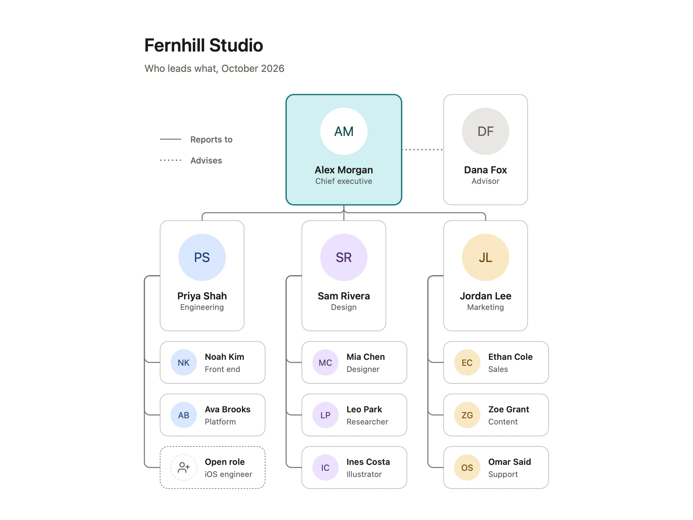

An org chart that stays tidy as the team changes
PUBLISHED 2026-11-06
An org chart is out of date the week after it’s drawn. Someone joins, someone moves teams, a role opens, and the chart that took an afternoon to line up now needs another afternoon, so nobody updates it. The answer isn’t to update it less often. It’s to draw it so that the common changes are small.
This article is a method for an org chart that survives a growing, changing team. It works in any tool. The last part shows where Diagrove helps.
Decide what the chart shows
“Who reports to whom” and “who works with whom” are different charts. A reporting chart shows line management: one box per person, one line up to their manager. A team chart shows how work is organised, which often cuts across reporting lines. Choose one. If you need both, draw both, and keep the reporting chart plain.
Decide the depth too. A chart of a 200-person company that shows everyone is a poster nobody reads. Show two or three levels, and give each large team a chart of its own, linked from the top one.
One box, one person, the same shape
Every person gets the same box: name first, role underneath, both short. “Priya Shah, Engineering” beats “Priya Shah, Senior Engineering Manager, Platform and Infrastructure (Interim)”. Titles change more often than people, and long ones force wider boxes.
Keep every box the same size, at each level. Boxes sized to their text make every rename a layout change. A photo or initials help people put faces to names, but keep them small and in the same place on every box.
Stack reports under their lead
The layout decides how much work a change is. The classic tree, with every report side by side under their manager, grows sideways: one new hire on a team of five widens the whole level, and everything to the right has to move.
Stacking avoids that. Put each lead’s reports in a column under them, with the reporting line running down the side of the column. A new hire is a new row at the bottom of one column. Nothing else moves. The chart grows downwards, which a page and a screen both handle better than sideways.
Keep the lines plain, and give them one meaning
Reporting lines should be the plainest thing on the chart: thin, one colour, right angles, never crossing a box. Give every other kind of relationship a different line and put it in a key: a dotted line for an advisor, or for someone who reports to one person and works for another. If you need more than two kinds of line, you’re drawing a team chart, not an org chart.
Show open roles
An open role is part of the team’s shape. Draw it as a box like the others, with a dashed outline and the role instead of a name: “Open role, iOS engineer”. People see where the team is growing, candidates see where they would sit, and when the role is filled, the box gets a name and solid edges. Nothing moves.
Date it, and say who keeps it
Put the month in the title or under it: “Who leads what, October 2026”. Then readers know how far to trust it. Name one person who updates it, and make updating it part of the change: the week someone joins, moves or leaves, the chart changes too.
Keep it where people look
A chart in a slide deck from last spring helps nobody. Keep the current one in the place people already look: the team’s wiki, the welcome pack for new starters, the channel where announcements go. Replace it there rather than sending a new copy around.
How Diagrove helps
Diagrove is a diagramming app for Mac and iPad, and its Org chart template is drawn the way this article describes.
Start from the Org chart template. Org chart is a design studio, “Who leads what, October 2026”: a chief executive, an advisor on a dotted line, three department leads, and each lead’s team stacked in a column under them, with an open role in a dashed box and a key to the two kinds of line. The leads’ cards are one size and their reports’ another, each with initials, a name and a role. Choose File › New from template… (Shift-Command-N) on the Mac, then Ideas and teams and Org chart, or Choose a template on iPad.

Add someone in a few moves. Select the last card in a column and, on the Mac, choose Edit › Duplicate (Command-D). Drag the copy below the column: smart guides line its edges up with the cards above and snap it to the same gap between them. Change its words. Then draw its reporting line with the Line tool (L) from the lead’s card to the new one; as you hover, the magnets show where it will attach. Set its route to Elbow in the inspector’s Line section, like the others.
Lines that stay attached. Every reporting line is attached to the magnets of the cards it joins, so when a lead’s column grows or a team moves, the lines follow the cards. Nothing needs redrawing.
The cards are stencils. The cards come from the Org chart stencil library: a card with a photo for the leads, a person card for everyone else, and an open role card. Add more from the Stencils tab, and one tint recolours a card whole. See Stencils and tints.
Start with this month’s chart
Draw the chart as it is this month, with reports stacked, open roles in dashed boxes and the month in the title. Next time someone joins, add one row.
- See the Org chart template, and the other ideas and teams templates: a team map, a RACI matrix and a skills matrix.
- Read about drawing, lines and smart guides in the Diagrove guide.